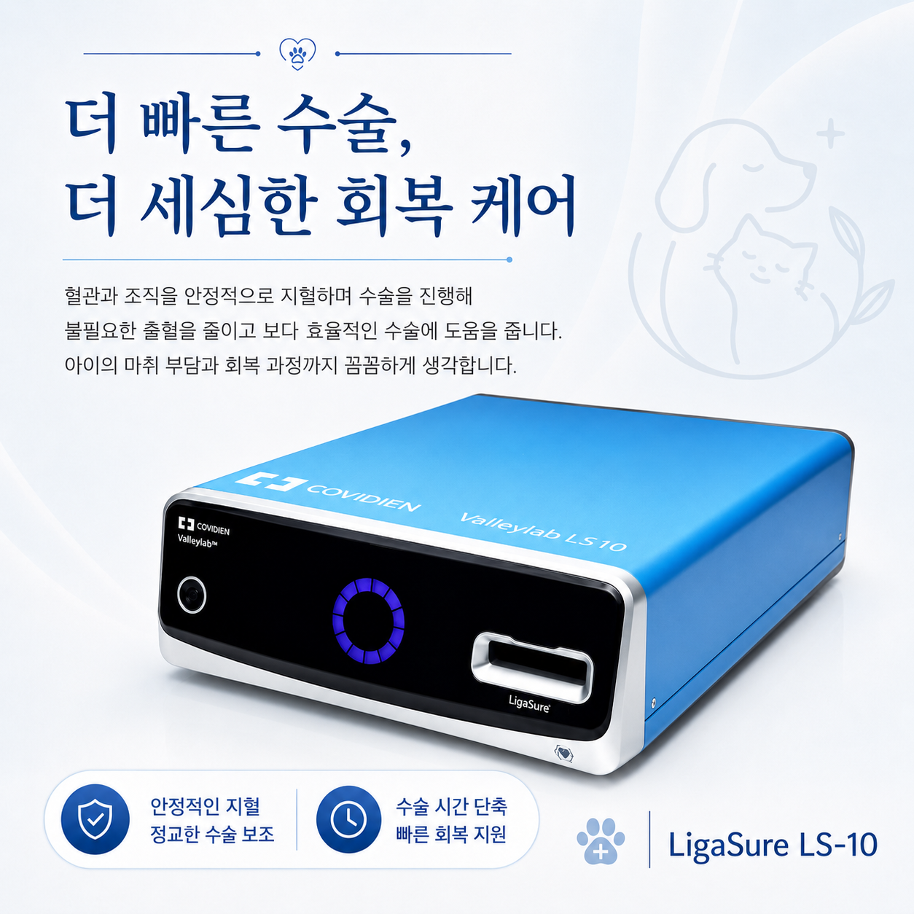
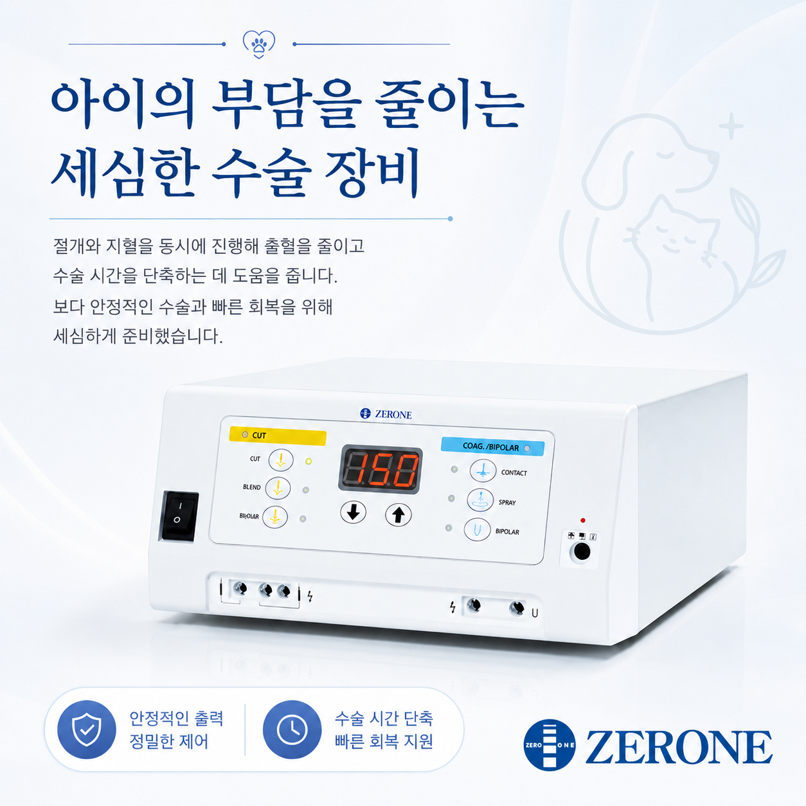
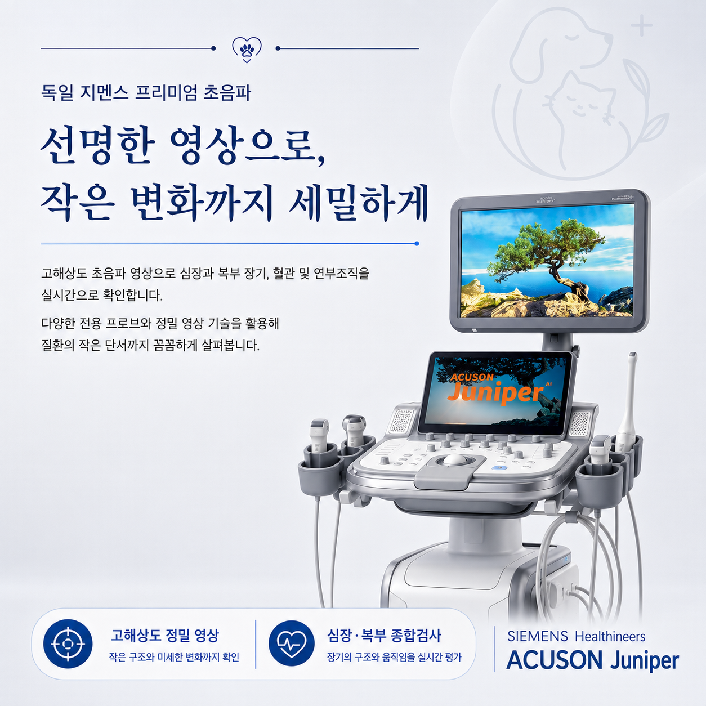
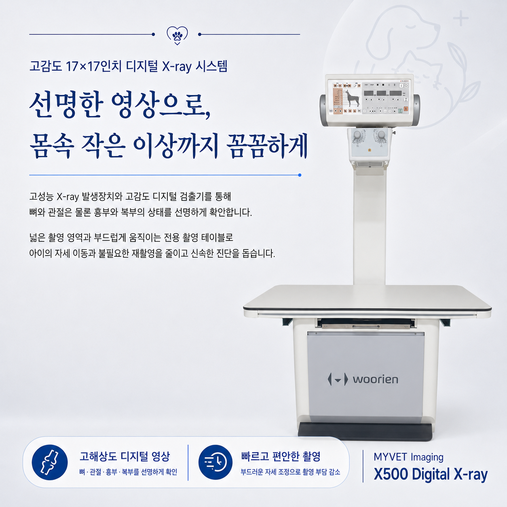

혈관 봉합 시스템
LigaSure LS-10
혈관과 조직을 안정적으로 지혈하며 수술을 진행할 수 있도록 돕는 장비입니다. 불필요한 출혈을 줄이고 수술 과정을 보다 효율적으로 이어가는 데 도움을 줍니다.
출혈 관리부터 회복 과정까지, 아이의 수술 부담을 줄이기 위해 세심하게 사용합니다.장비의 이름보다 아이의 진료에 어떤 도움을 주는지, 보호자가 이해하기 쉬운 관점으로 소개합니다.
수술 중 출혈을 세심하게 관리하고 절개와 지혈을 안정적으로 진행할 수 있도록 아이의 상태와 수술 계획에 맞는 장비를 사용합니다.

혈관과 조직을 안정적으로 지혈하며 수술을 진행할 수 있도록 돕는 장비입니다. 불필요한 출혈을 줄이고 수술 과정을 보다 효율적으로 이어가는 데 도움을 줍니다.
출혈 관리부터 회복 과정까지, 아이의 수술 부담을 줄이기 위해 세심하게 사용합니다.
절개와 지혈을 정교하게 조절할 수 있도록 돕는 전기수술기입니다. 수술 부위와 조직의 특성에 맞춰 안정적인 출력으로 세밀한 수술 진행을 지원합니다.
장비의 성능만큼 중요한 것은 아이의 상태에 맞는 판단과 섬세한 사용이라고 생각합니다.영상검사는 겉으로 보이지 않는 변화의 위치와 범위를 확인해 진료의 방향을 정하는 과정입니다. 필요한 영상을 빠르고 선명하게 얻어 아이에게 맞는 다음 단계를 신중하게 판단합니다.

고해상도 초음파 영상으로 심장과 복부 장기, 혈관 및 연부조직의 구조와 움직임을 실시간으로 확인합니다. 다양한 전용 프로브를 활용해 작은 변화도 세밀하게 살피는 데 도움을 줍니다.
검사 화면의 작은 단서까지 놓치지 않고, 아이의 증상과 함께 꼼꼼하게 해석하겠습니다.
뼈와 관절은 물론 흉부와 복부의 상태를 선명한 디지털 영상으로 빠르게 확인합니다. 넓은 촬영 영역과 부드럽게 움직이는 테이블로 자세 이동과 불필요한 재촬영을 줄이는 데 도움을 줍니다.
필요한 영상을 정확하게 얻어 촬영 부담은 덜고, 진단에 필요한 정보는 충분히 확보하겠습니다.혈액과 소변 등에서 확인할 수 있는 다양한 수치를 병원 안에서 신속하게 살펴 아이의 현재 상태와 진료 방향을 세심하게 판단합니다.